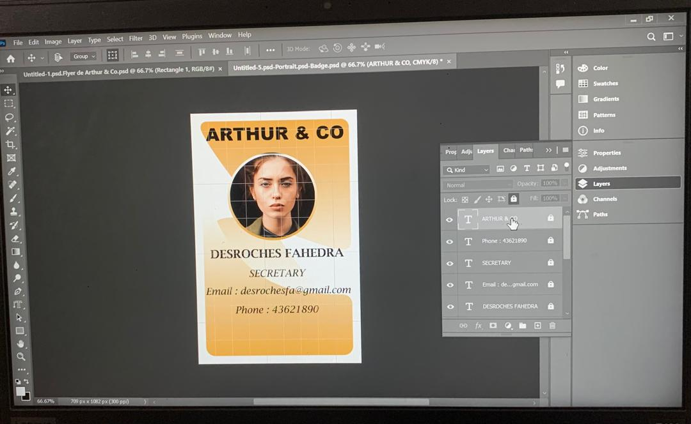
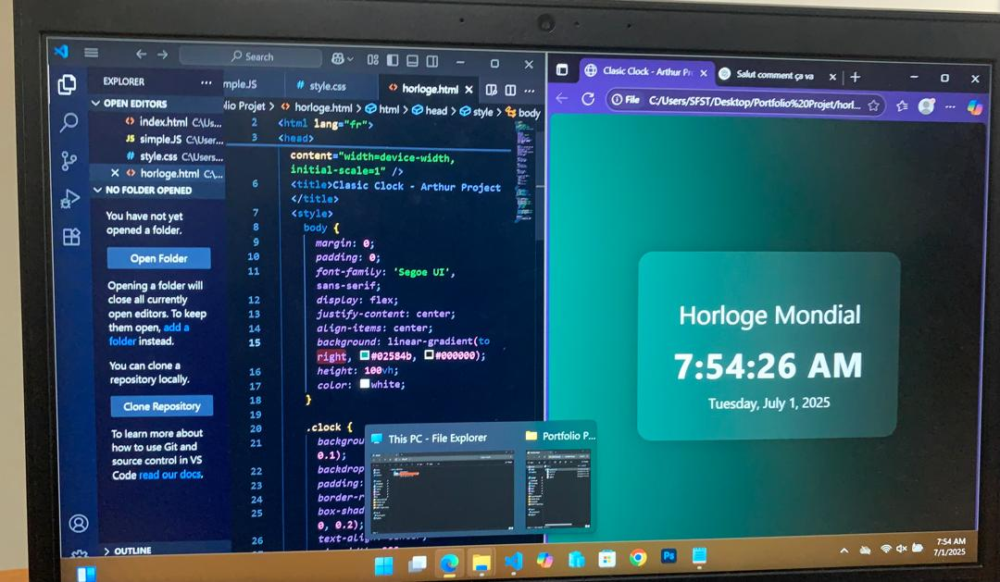
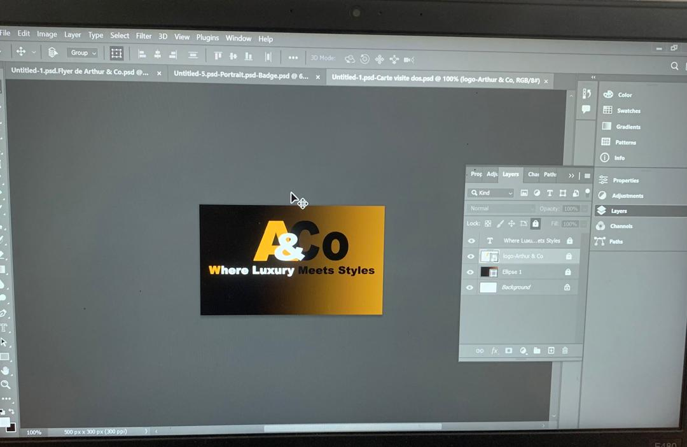

Graphic Design
Description courte du projet 1.🖼️ Badge ARTHUR & CO Description : Badge professionnel conçu sous Photoshop avec photo, fonction, et contacts. Objectif : Créer un visuel clair pour l’identification des membres. Outils :Adobe Photoshop (calques, formes, texte, photo).
Voir le projet
Programmation
Description courte du projet 2. 💻 Horloge Digitale – HTML/CSS/JS Description : Horloge mondiale dynamique affichant l’heure et la date en temps réel. Objectif : Mettre en pratique HTML/CSS/JS dans un projet interactif. Outils : VsCode : HTML, CSS (flex, gradient), JavaScript (Date, setInterval).
Voir le projet
Graphic Design
Description courte du projet 3. 🎨 Carte de Visite A&CO Description : Verso de carte de visite avec logo et slogan, style moderne et luxueux. Objectif : Renforcer l’identité visuelle de marque. Outils : Adobe Photoshop (logo, dégradé, typographie). Voir le projet